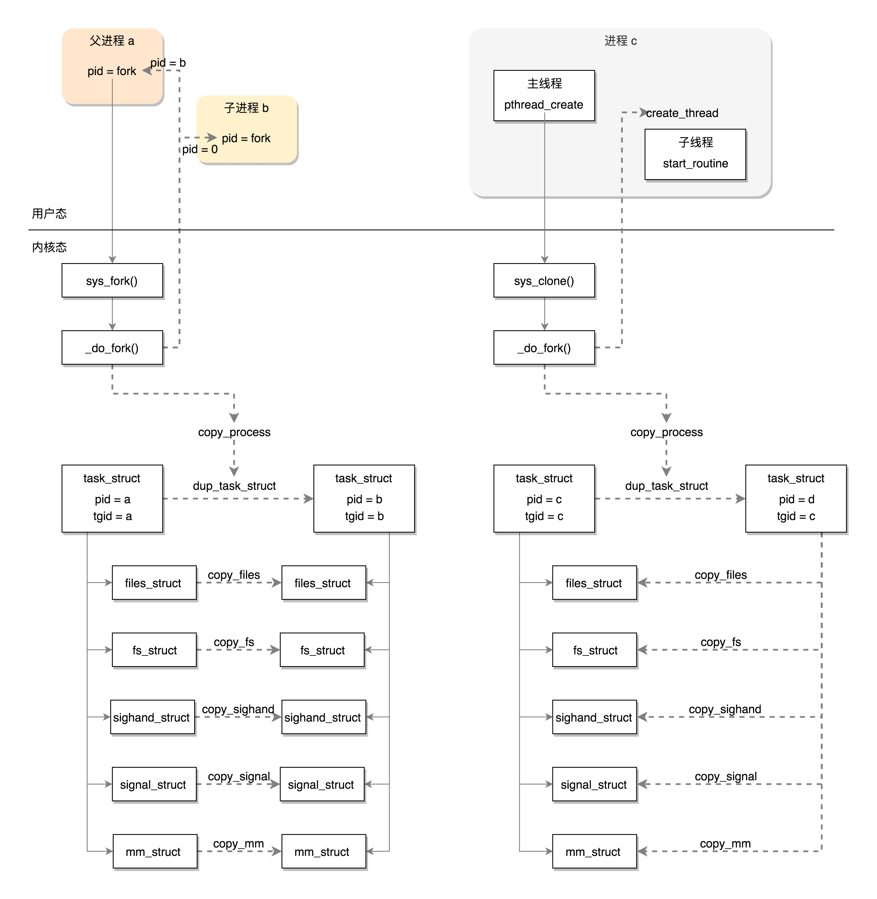

线程的创建
原理
- 由内核态和用户态合作完成的
- 用户态维护线程的结构 pthread
线程栈的创建
- 设置栈的大小，需要你把设置的值拿出来；
- 为了防止栈的访问越界，在栈的末尾设置guardsize，一旦访问到这里就错误了；
- get_cached_stack 从缓存中获取已经存在的线程
- __mmap创建新的线程内存区域
- 计算出 guard 内存的位置
- 设置pthread 这个结构里面的成员变量 stackblock、stackblock_size、guardsize、specific。这里的 specific 是用于存放 Thread Specific Data 的，也即属于线程的全局变量；
- 将这个线程栈放到 stack_used 链表中，其实管理线程栈总共有两个链表，一个是 stack_used，也就是这个栈正被使用；另一个是 stack_cache，就是上面说的，一旦线程结束，先缓存起来，不释放，等有其他的线程创建的时候，给其他的线程用。
内核态创建任务
- start_routine
- __nptl_nthreads 线程数加1
- create_thread 创建线程
- --clone-->do_fork
标志位设定
- CLONE_FS copy_fs
- CLONE_SIGHAND copy_sighand
- CLONE_VM copy_mm
亲缘关系
- CLONE_THREAD
信号处理
- kill 进程
- pthread_kill 线程
- 初始化 struct sigpending pending
- 返回用户态
用户态执行线程
- start_thread 统一入口
- 调用完毕线程数目减1
总结

- 查看进程和线程栈的使用情况
- pstack
- pstree